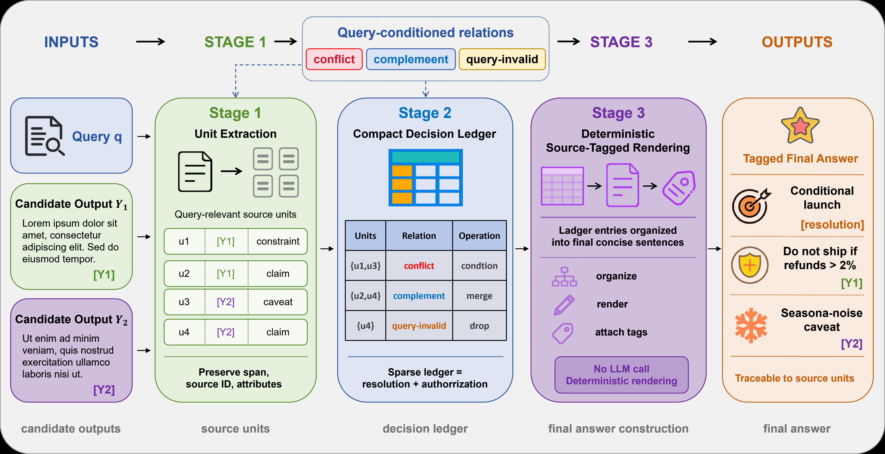
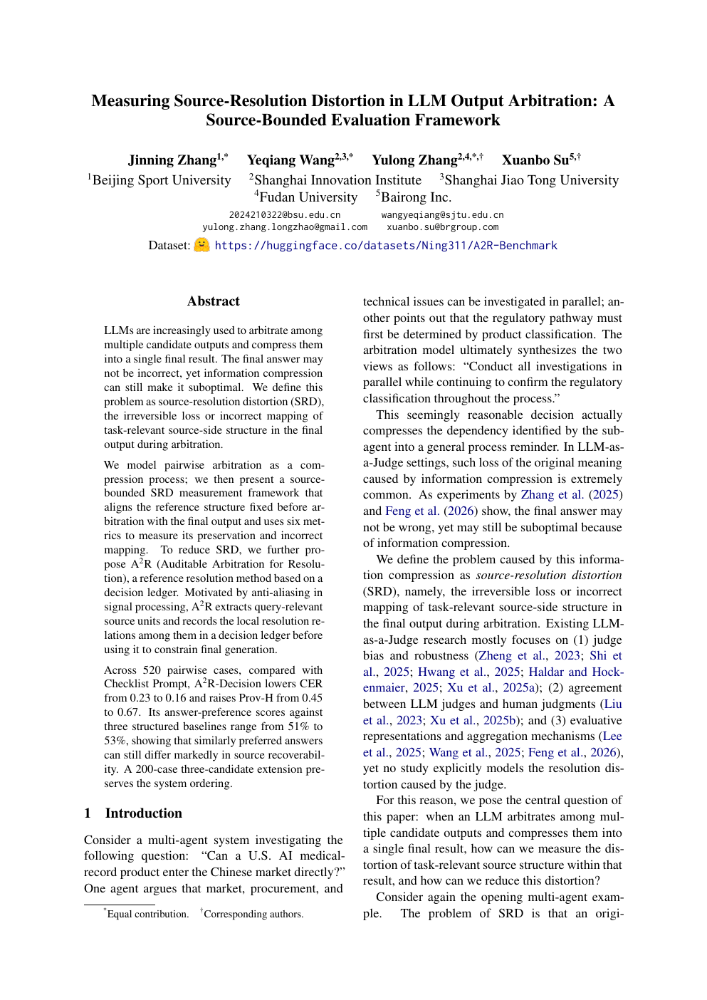

01 / QUERY
One question, two candidate resolutions.
Multiple agents examine the same market-entry decision. Their answers carry different source relations.
Source-bounded LLM arbitration
A2R measures source-resolution distortion in LLM output arbitration. Distortion appears when answer merging erases task-relevant source structure or assigns the wrong relation.
1 Beijing Sport University · 2 Shanghai Innovation Institute · 3 Shanghai Jiao Tong University · 4 Fudan University · 5 Bairong Inc.

The paper opens with a concrete multi-agent question: Can a U.S. AI medical-record product enter the Chinese market directly?
The test is source recoverability after arbitration: does the relation that supports the decision survive?
Multiple agents examine the same market-entry decision. Their answers carry different source relations.
“Market, procurement, and technical checks can proceed in parallel.”
parallel checks“Product classification must precede selection of the regulatory pathway.”
prerequisite relation“Conduct all investigations in parallel while continuing to confirm the regulatory classification.”
sounds reasonableThe arbitration result reads as a sensible instruction. It drops the dependency between product classification and the regulatory pathway. The text retains both ideas while losing the relation that connects them.
When an LLM compresses multiple candidate outputs into one result, what evidence shows that task-relevant source structure survived? Which controls reduce distortion?
This question defines the measurement framework and the A2R method.A2R-Decision gives the generator an explicit resolution state. The generator renders claims with their source roles and caveat scope attached.
For a query and two candidates, the resolver builds a compact decision record. Extraction, local resolution, and final rendering remain separate, which makes each stage inspectable.
For x = (q, A, B), the system must decide which source units matter, how they relate under the query, and what the final answer is licensed to claim. The same framework extends to three candidates by adding UC.
The optional ledger records each decision before free-form rendering.
Read the query and candidate answers. Keep content that may license a final claim: a local claim, evidence statement, recommendation, caveat, constraint, or risk note.
uᵢ = (idᵢ, sourceᵢ, textᵢ, typeᵢ, flagsᵢ)
For each local judgment, record the units involved, their query-conditioned relation, the licensed claim, the resolution operation, and its provenance category.
ℓₘ = (dₘ, Iₘ, rₘ, oₘ, cₘ, pₘ)
Render the ledger with a deterministic template. Order claims, merge adjacent entries on the same topic, add connectives, and inherit caveat scope and provenance.
ŷ = G(L̂)
Combine compatible units and retain their source roles.
Retain alternatives when identifiable conditions lead to different conclusions.
Exclude query-irrelevant units.
Record the alternatives and the missing criterion.
The ledger places Candidate A and Candidate B in one decision record. It keeps Candidate B's prerequisite scope attached. The final text stays concise and retains the dependency.
[r1][resolution] For non-regulatory matters, market, procurement, and technical research can proceed in parallel following Candidate A. Given the prerequisite specified by Candidate B, investigation of the regulatory pathway should begin after product classification is determined.
A2R applies an anti-aliasing principle. Distinguishable source units and their local relations remain intact before the answer is shortened.
The benchmark defines gold source structure before system execution. Scores identify the stage where structure is lost: extraction, ledger construction, or final rendering.
Final-only and final-plus-trace outputs are reported separately. The evaluation tracks source recoverability. Candidate-content factuality is a separate property.
Were the query-relevant units retained from the candidate set?
Did relations, provenance assignments, and caveat attachments remain explicit?
Did the final claims preserve the authorized structure and source links?
CER and Prov-H are the primary metrics. FCR, UAR, and CPR diagnose common failure modes. RF* supports mechanism analysis through query-conditioned relation labels.
Across 520 pairwise cases, A2R-Decision records CER 0.16 and Prov-H 0.67, compared with 0.23 and 0.45 for Checklist Prompt. It uses 1.44× the Checklist Prompt token cost.
The repository contains the implementation, prompts, ledger schemas, and evaluation scripts.
Code and evaluation materials are released together for reproduction.
Implementation, prompts, ledger schemas, and evaluation scripts.
Open code repositoryThe benchmark fixes gold source structures before system execution. Evaluation records which relations arbitration preserves, erases, or maps incorrectly.
The release contains no annotator identities, raw annotator logs, account metadata, or identifying free-text notes.

Measuring Source-Resolution Distortion in LLM Output Arbitration
Jinning Zhang, Yeqiang Wang, Yulong Zhang, and Xuanbo Su.
@inproceedings{zhang2026a2r,
title = {Measuring Source-Resolution Distortion in LLM Output Arbitration: A Source-Bounded Evaluation Framework},
author = {Zhang, Jinning and Wang, Yeqiang and Zhang, Yulong and Su, Xuanbo},
booktitle = {Proceedings of EMNLP},
year = {2026}
}